Project 2 Pattern Formation
Contents
Question 1
Here we find a steady state solution to
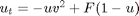
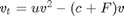
By inspection it is: u = 1, v = 0
Question 2
Here we use the 'Forward Euler' method to approximate a numerical solution to the two ODEs which advances step-by-step in time.
type fe.m
c = 0.065;
F = 0.03;
u0 = 0.5; % initial conditions
v0 = 0.5;
dt = 0.1; % time-step
tf = 100; % final time
numsteps = ceil(tf/dt) % if not integer then
dt = tf/numsteps % adjust dt slightly
figure(1); clf; hold on;
u = u0;
v = v0;
for n = 1:numsteps
ut = (-u).*(v.^2) + F.*(1.-u);
vt = u.*(v.^2) - (c+F).*v;
unew = u + dt*ut;
vnew = v + dt*vt;
u = unew;
v = vnew;
plot(n*dt, u, 'r*');
plot(n*dt, v, 'b*');
end
By trying various initial conditions the steady state solution appears to correspond to our initial inspection, u = 1, v = 0. By testing other values in the range (0,1) the ODE system appears to be very stable, resorting to the stable concentrations as t increases.
Initial conditions of 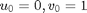
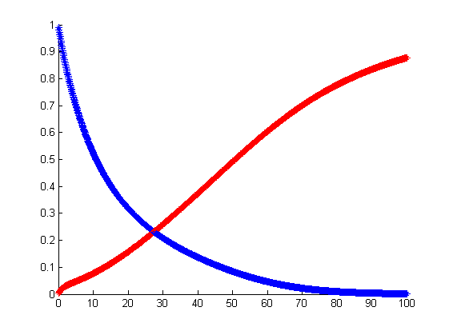
Initial conditions of 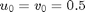
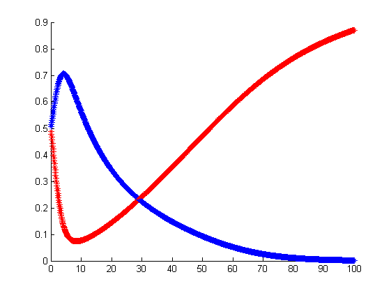
Question 3
Small changes in dt do not affect the stability of the system to any great degree. Large changes cause it to 'blow up' producing very large, divergent solution values.
dt = 14.286; % critical time below which solutions are stable
Question 4
Now we will model the heat equation. Similarly to how we dealt with time, we will discretization space into a vector of discrete values 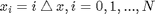. We then approximate the second derivative on those points with a matrix.
type lap1d_matrix.m
function L = lap1d_matrix(N,dx); % make differentiation matrix e = ones(N,1); L = spdiags([e -2*e e], [-1 0 1], N, N); L(1,N) = 1; % this gives periodic BCs L(N,1) = 1; L = L/dx^2; end
Question 5
Here we write a script heat1.m which approximately solves the 1-D heat equation 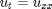 with periodic boundary conditions on the domain 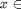 [0,1) by combining the forward Euler code with the matrix L above.
type heat1.m
N = 16;
dx = 1/N;
L = lap1d_matrix(N,dx);
% make a grid
x = (0:dx:(1-dx))'; % note, stop before 1
u0 = sin(2*pi*x); % initial conditions
dt = 0.0005; % time-step
tf = 0.1; % final time
numsteps = ceil(tf/dt) % if not integer then
dt = tf/numsteps % adjust dt slightly
figure(1); clf; hold on;
u = u0;
for n = 1:numsteps
figure(1); clf; hold on;
u = u(:); % straightens out u
ut = L*u;
unew = u + dt*ut;
u = unew;
plot(x, u, 'mx');
end
hold on;
exact = exp((-4)*(pi^2)*0.1)*sin(2*pi*x);
plot(x, exact, 'c--');
xlabel('x'); legend('Approx Soln', 'Exact Soln')
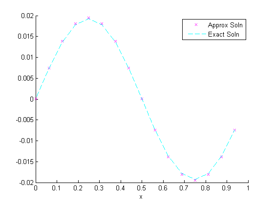
Question 6
Our original ODE code had a time-step restriction to avoid numerical instability. heat1.m (discovered by running the code with various 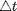 and 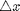) has a critical value of , below which we have numerical stability. It is: dt < 0.8*dx
Question 7
Here we write a script heat2.m which approximately solves the 2-D heat equation 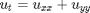 with periodic boundary conditions on the domain [0,1)^2 by combining the forward Euler code with the matrix L using initial condition of: u = sin(2*pi*x) .* cos(4*pi*y) and a final time of 0.1
type heat2.m
N = 16;
dx = 1/N;
x1d = (0:dx:(1-dx))'; % note, we left off "1"
y1d = x1d; % same for y
[x,y] = meshgrid(x1d,y1d);
dt = 0.0005; % time-step
tf = 0.1; % final time
numsteps = ceil(tf/dt) % if not integer then
dt = tf/numsteps % adjust dt slightly
L1 = lap1d_matrix(N,dx);
I = speye(size(L1));
L = kron(L1,I) + kron(I,L1);
u0 = sin(2*pi*x) .* cos(4*pi*y); % note: .*
u = u0;
surf(x,y,u);
size(u)
figure(1); clf; hold on;
for n = 1:numsteps
figure(1); clf; hold on;
u = u(:); % straightens out u
ut = L*u;
unew = u + dt.*ut;
u = unew;
uplot = reshape(u, size(x));
surf(x, y, uplot);
view(3);
end
Plot of initial conditions.
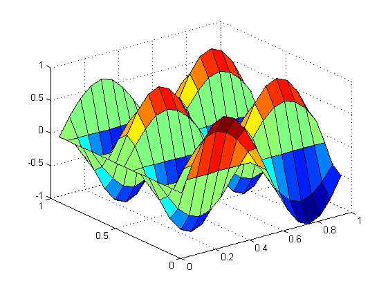
Plot of solution at t = 0.1
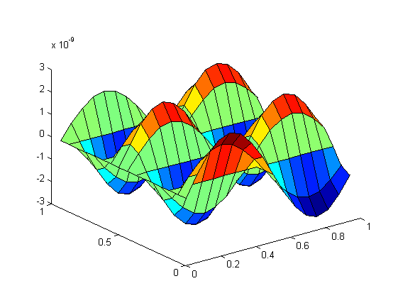
Question 8
Script called grayscott2.m which computes numerical solutions of the Gray–Scott equations
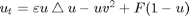
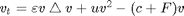
on the square periodic domain [0,1)^2 using a final time of 3000 and initial conditions of
% % u0 = min(1, 10*sqrt((x-.2).^2 + (y-.2).^2) ); % v0 = max(0, 1 - 10*sqrt((x-.3).^2 + 2*(y-.3).^2) ); type grayscott2.m
N = 100;
dx = 1/N;
x1d = (0:dx:(1-dx))'; % note, we left off "1"
y1d = x1d; % same for y
[x,y] = meshgrid(x1d,y1d);
dt = 40*dx; % time-step
tf = 3000; % final time
numsteps = ceil(tf/dt) % if not integer then
dt = tf/numsteps % adjust dt slightly
L1 = lap1d_matrix(N,dx);
I = speye(size(L1));
L = kron(L1,I) + kron(I,L1);
c = 0.065;
F = 0.06;
eu = 5*(10^(-5));
ev = 2*(10^(-5));
u0 = min(1, 10*sqrt((x-.2).^2 + (y-.2).^2) );
v0 = max(0, 1 - 10*sqrt((x-.3).^2 + 2*(y-.3).^2) );
figure(1); clf; hold on;
xlim([0,N]); ylim([0,N]); % static limits
u = u0;
v = v0;
for n = 1:numsteps
figure(1); hold on;
u = u(:);
v = v(:);
ut = (eu)*L*u - u.*(v.^2) + F.*(1.-u);
vt = (ev)*L*v + u.*(v.^2) - (c+F).*v;
unew = u + dt*ut;
vnew = v + dt*vt;
u = unew;
v = vnew;
if mod(n,100) == 0
uplot = reshape(u, size(x));
vplot = reshape(v, size(x));
h = pcolor(uplot);
set(h, 'EdgeColor', 'none');
g = pcolor(vplot);
set(g, 'EdgeColor', 'none');
% frame = getframe(1);
% im = frame2im(frame);
% [imind,cm] = rgb2ind(im,256);
% if n == 100;
% imwrite(imind,cm,'stripes40.gif','gif', 'Loopcount',inf);
% else
% imwrite(imind,cm,'stripes40.gif','gif','WriteMode','append');
% end
end
end
For spots we set c = .065 and F = .03
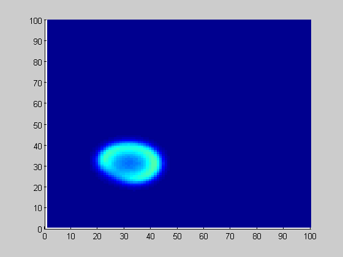
For stripes we set c = .065 and F = .06
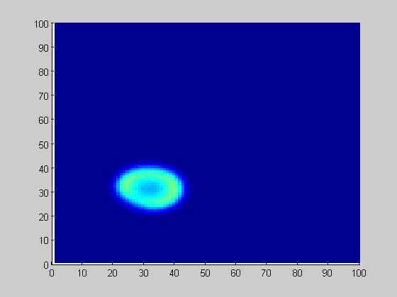
Question 9
Setting the 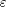 diffusion coefficients constants to 0 leads to the system 'dying' as the initial concentration of colour disappears. A similar 'disappearance' happens when the constants are nonzero but equal, but jsut at a different rate.
eu = 0 ev = eu
eu =
0
ev =
0
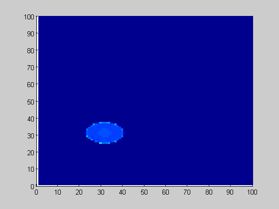
eu = 5*(10^-5) ev = eu
eu = 5.0000e-05 ev = 5.0000e-05
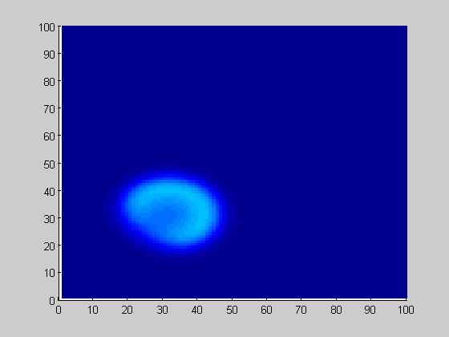